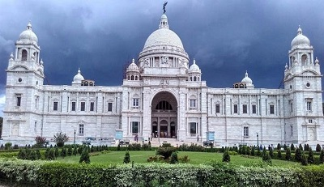
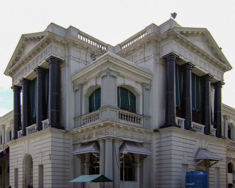

15th Century CE witnessed huge innovations in naval technology
which aided in ocean explorations for new trade routes. Hence
this period is referred to as the 'Age of Discovery' .
In 1492, Christopher Columbus an Italian Explorer under the
sponsorship of a spain king, formulated a plan to seek a
western sea passage to the East Indies (Indonesian and
Philippine Archipelago), hoping to profit from the lucrative
spice trade. In the process he 'discovered' America.
Line of Demarcation: A treaty was signed by Spain and
Portugal in 1494 called Treaty of Tordesillas, by which
they divided the whole globe into two halves. The lands to the
east of Cape Verde islands (off the west coast of Africa)
would belong to Portugal and lands to the west to Spain.
The closing of the traditional trade routes in western Asia by
the Ottoman Empire (Turkey), and rivalry with the Italian
states sent Portugal in search of an alternate sea route to
India.
Near the end of the 15th century, Portuguese sailor Vasco da
Gama became the first European to re-establish direct trade
links with India since Roman times by being the first to
arrive by circumnavigating Africa.
The Portuguese in India
Prince Henry the Navigator, a patron of sailors and a special
school at Sagres(Portugal) in which nautical knowledge was
collected and new maps were made. All that knowledge gave
Portuguese sailors a huge competitive advantage when it came
to exploration.
Vasco Da Gama was the first of Henry’s protégés to
discover sea route to India in 1498. He reached port of
Calicut via Cape of Good Hope (S. Africa). At that time
Calicut was a major trading post on India’s west coast under
the Hindu ruler Zamorin (Samuthiri).
The Portuguese wanted to monopolise the hugely profitable
eastern trade by excluding competitors, especially the Arabs.
King Zamorin was against giving any special advantages to the
Portuguese. He was later defeated by the Portuguese.
Portuguese didn’t create huge colonies. However, they were
able to capture & control a number of coastal cities, creating
what historians call a “trading post empire”. Vasco’s
second visit in 1502 led to the establishment of
trading stations at Calicut, Cochin and
Cannanore.
Francisco de Almeida (1505-09) was the first Portuguese
Governor/Viceroy in India (three-year term). He initiated
the blue water policy(cartaze system). Under which, the
Portuguese merchant ships would capture other ships and force
them to purchase a permit to trade called a cartaze.
And without a cartaze, a merchant couldn’t trade in any of the
towns that Portugal controlled.
Alfonso de Albuquerque (1509-1515) became Governor of
the Portuguese in India in 1509. He captured Goa from Bijapur.
He initiated the policy of marrying with the natives of India
and banned the practice of sati in his area of influence.
Nino-da-Cunha (1529-1538) transferred the capital from
Cochin to Goa in 1530. He aquired Diu from the
Gujarat King Bahadur Shah. They also acquired
Hooghly(West Bengal)
during this period.
Portuguese acquired Daman in 1559. They lost Hooghly
(West Bengal) in 1631, during the reign of Shah Jahan
In 1661, the Portuguese king gave
Bombay to Charles II of England as dowry, for marrying
his sister.
Gradually, almost all of their territories were lost to
Marathas, Dutch and English. Only
Goa, Diu and Daman remained with them until 1961.
Interestingly, the Portuguese,
the first Europeans to come to India, were also the last to
leave this land. It was 1961 before the Government of India recaptured Goa,
Daman and Diu from them.
The Dutch (Netherland)
The Dutch East India Company established factories in India at
Masulipatnam (AP) in 1605, Pulicat (TN), Surat (Gujarat),
Karaikal (Puducherry), Kasimbazar (West Bengal), Chinsura
(Hooghly, WB) Patna, Balasore (Odisha), Nagapatam (TN) and
Cochin (Kerala).
Pulicat was their main centre in India till Nagapatam replaced
it in 1690.
Mir Jafar, the Nawab of Bengal invited the
Dutch East India Company to help him expel the British
and establish themselves as the leading commercial company in
Bengal. The British defeated the Dutch, forcing them to
withdraw. The Dutch conceded to British after their defeat in
the
Battle of Bedera/Chinsura/Hooghly in 1759.
The defeat of the Dutch in the Anglo-Dutch rivalry shifted the
Dutch attention towards the Malay Archipelago (mainly
Indonesia).
The English/British
The English East India Company was formed on
December 31, 1600 by the charter issued by
Queen Elizabeth I , which gave the company monopoly to
trade in India and the East Indies for 15 years.
With Captain Thomas Best’s victory over the Portuguese (1612),
the English established their
first factory at Surat, Gujarat (1613).
In 1608 AD, Captain William succeeded in getting a royal
permit from Jahangir for the Company to establish its
factories at various places on the Western coast of India.
In 1615 AD Sir Thomas Roe secured permission from
Jehangir to establish factories at Agra(UP),
Ahmedabad(Gujarat) and Broach (Bharuch, Gujarat).
Bombay came under the control of the Company, with
Charles II (who received it as a part of the Portuguese
dowry) leasing it out to the English Company for an annual
rent.
In 1639, Madras was obtained from Raja of Chandragiri
with permission to build a fortified factory, which was named
Fort St George. It replaced Masulipatnam as the English
headquarters on the east coast.
In 1690 a factory was established at Sutanuti and the
Zamindari of three villages
Sutanuti, Kalikata and Gobindapur were acquired by the
British (1698). These three villages grew as city of
Calcutta. The factory at Sutanati was fortified and
named Fort William in 1700.
Farrukhsiyar’s Farmans: In 1717, the Mughal Emperor
Farrukhsiyar’s farmans, called
Magna Carta of the East India Company, gave significant
privileges to the Company in Bengal, Gujarat and Hyderabad.
Battle of Plassey(in Bengal): Fought between British
East India Company under the leadership of
Robert Clive over a much larger force of the Nawab of
Bengal, Siraj-ud-Daulah and his French allies in 1757
.The battle helped the Company seize control of Bengal.
Battle of Buxar(in bihar): Fought between the forces
under the command of the British East India Company, led by
Hector Munro, and the combined armies of
Mir Qasim, Nawab of Bengal; the Nawab of Awadh
Shuja-ud-Daula; and the Mughal Emperor
Shah Alam II. It was a decisive victory for the British
East India Company. The war had been brought to an end by the
Treaty of Allahabad in 1765. Under this treaty, Shah
Alam II granted the East India Company Diwani rights,
or the right to collect taxes on behalf of the Emperor from
the eastern province of Bengal-Bihar-Orissa.
This started the rule of East India Company, which continued
till 1857.

Fort William, Kolkata

Fort St.George, Chennai
The French
The French East India Company was formed in 1664 under
state patronage during the reign of
Louis XIV.
The first French factory was established at Surat in
1668 and second at Masulipatnam in 1669.
Pondicherry, developed as headquarters, was granted to
Francois Martin, the director of Masulipatnam factory. It was
finally incorporated into Indian Union in 1954.
Anglo-French Rivalry in India:
First Carnatic War (1740-48) It was an extension of
the Anglo-French rivalry in Europe and ended in 1748 with
the Treaty of Aix-La Chapelle. Under the terms of
this treaty, Madras was handed back to the English, and the
French, in turn, got their territories in North America.
Second Carnatic War (1749-54) Although inconclusive,
it undermined the French power in South India vis-à-vis the
English.
Third Carnatic War (1758-63): A decisive war, known
for the Battle of Wandiwash (1760-61).
By the Treaty of Paris (1763), the French were allowed
to use Indian settlements for commercial purposes only and
fortification of settlements were banned.
The Danes
(Germanic Ethnic Group)
The Danish East India Company was established in 1616
and, in 1620, they founded a factory at
Tranquebar near Tanjore, on the eastern coast of India.
Their principal settlement was at
Serampore near Calcutta.
They did not play any significant role and were forced to sell
their settlements to the British in 1854.